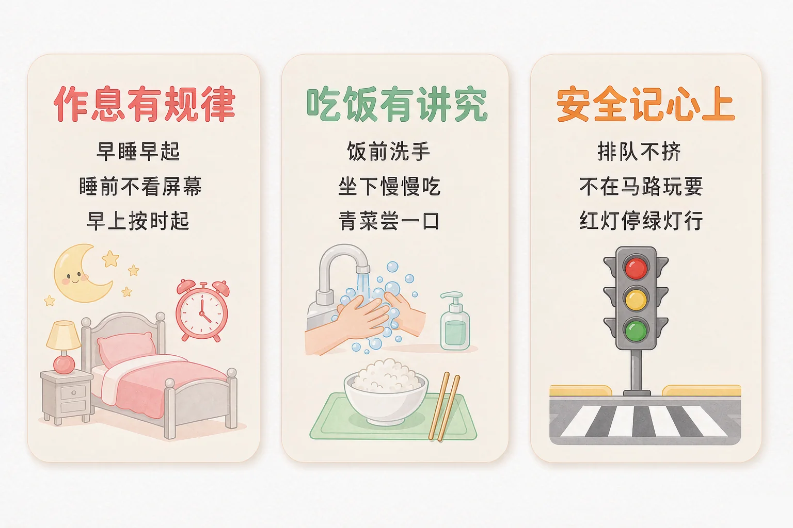
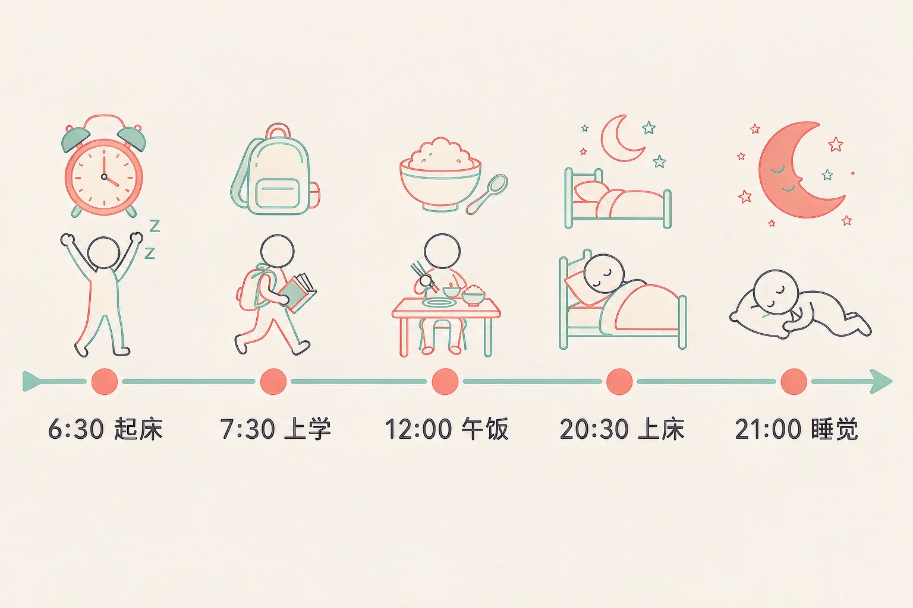
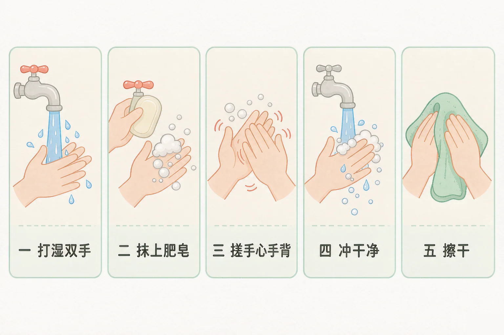

Gallery
v1.0.0 · skill v7.22.0
小学一年级 · 生命安全与健康
晚上几点睡、饭前要不要洗手、过马路先看哪边——这些小事为什么这么重要？

选一个你真正想知道的问题，后面的活动都会围着它转。
选择或输入后，这节课会围绕你的问题展开。
先凭直觉选一个，选完立刻看到解释——错了也没关系，正好知道要重点听哪里。
1. 明天要早起上学，晚上八点半动画片还没看完，下面哪个做法更合适？
九点前上床，能睡够十个小时，第二天早上眼睛一亮就能起来。错因提醒：有人误认为「少睡一会儿没关系」——一晚上少睡两三个小时，第二天上课就容易打瞌睡，这是最常见的一个搞混。
2. 家里人喊我吃饭了，我刚从外面玩回来，应该先做什么？
用肥皂把手心和手背都搓一搓，看不见的细菌就被冲走了，吃下去的东西更干净。错因提醒：常见错误是误认为「手看上去不脏就不用洗」——细菌用眼睛看不见，洗手只要半分钟。
3. 放学后想和同学在小区里玩一会儿，出门前应该怎么做？
说一声去哪里，家里人心里踏实，你玩起来也安心，玩完按时回家，下次还放心让你出去玩。错因提醒：容易搞混「玩得开心」和「玩得安全」——到没有车的地方去玩，才能又开心又安全。
为什么要学这一课？
我们已经知道，每天要到学校上课、要早起出门（And）；可是一到晚上，动画片和小视频总让人舍不得放下，早上就起不来，匆匆忙忙出门，上午饿着肚子打瞌睡（But）；所以这节课就来学一学，几点睡、几点起，睡觉前先把什么放下来（Therefore）。
让身体舒服的第一件小事，就是作息有规律——每天差不多同一个时间睡，同一个时间起。

🔍 深层理解 换个角度再看一遍这件事，看看能不能说出背后的原理。
看见它：作息有规律不是一句空话，它就是三个能看见的动作：看钟表、关屏幕、上床躺下。
解释它：为什么屏幕会让睡不着？因为屏幕的光让脑子以为还是白天，身体就不肯进入休息的状态；早一点放下，才容易睡着。
迁移它：周末和放假的日子也一样。不用完全一样的时间，但也别睡到中午——作息一乱，回到学校就要难受好几天。
先点一件你每天可能遇到的小事，再从三个做法里选一个。选完会告诉你，这样做以后身体会怎么样。
先点一件今天可能遇到的小事。
让身体舒服的第二件小事，是吃饭有讲究。它分成三步，一步一步来就好。
吃饭前：先洗手
把玩具放下，用水打湿双手，抹上肥皂，手心、手背、指缝都搓一搓，冲干净再擦干。
吃饭时：慢慢吃
坐下来一口一口吃，一口饭嚼十来下。不边吃边玩，不追着跑着吃，也不含着饭说话。
吃什么：样样都吃一点
米饭、青菜、鸡蛋、豆腐都要吃。不爱吃的菜先尝一小口，这一顿不行，下一顿再试。
喝什么：先喝白开水
渴了喝白开水。冰饮料、甜饮料少喝，辣条和油炸的小零食少吃。

有的同学误认为「手看上去不脏就不用洗」。手上的细菌用眼睛看不见，摸过门把手、玩过玩具以后，一定要洗。还有的同学以为「不爱吃的菜一口不吃也没关系」，其实身体需要的营养，正好藏在那些不太爱吃的菜里。
🔍 深层理解 换个角度再看一遍这件事，看看能不能说出背后的原理。
比较它：同一顿饭，两种吃法：一种洗手坐下慢慢吃，一种手脏着边跑边吃。吃进去的东西一样，身体受不受累却完全不一样。
解释它：为什么洗手这么要紧？因为手每天摸很多东西，细菌就藏在手上；把它冲掉，肚子才不会闹意见。
迁移它：在学校也一样：吃午饭前、上完厕所后、摸过公共的东西以后，都要洗一洗。地方换了，做法不变。
先点一条做法，再点它应该进的筐：对身体好、要一直做下去的放一边，会让自己不舒服、要改一改的放另一边。
先在上面点一条做法。
分完之后，想一想：
「要改一改的地方」里，哪一条最像你自己？你打算从明天开始改哪一条？把它写下来。
情境：小安上一年级。我们从早到晚跟着他看一天，请你一步一步想一想，他哪几步做得对，为什么。
有的同学误认为「习惯是长大以后自然会有的」。其实好习惯是一天一天练出来的，今天做到一次，明天再做到一次，才慢慢变成你自己的。也有的同学不注意区分「不迟到」和「睡够觉」——早点睡才不会迟到，靠少睡多赶路，反而一天都没精神。
说给同桌听：小安这四步里，你已经做到哪几步？哪一步最想学着做？
先凭直觉选一个，选完立刻看到解释——错了也没关系，正好知道要重点听哪里。
1. 下面哪句话说得对？
睡够十个小时，长身体和上课听讲都更有精神。周末起床时间也别差太多，作息一乱，回到学校要难受好几天。错因提醒：常见错误是误认为「睡得晚、起得晚也一样是睡够了」——身体喜欢的是差不多的时间，睡得太晚，睡再久也不舒服。
2. 吃饭前，下面哪个做法更好？
手心、手背、指缝都用肥皂搓一搓，看不见的细菌就被冲走了，肚子不容易疼。错因提醒：容易搞混「看上去干净」和「真的干净」——细菌用眼睛看不见，洗手只要半分钟。
3. 我不太爱吃青菜，下面哪个做法更好？
先尝一小口，慢慢地就会习惯这种味道。青菜里的营养能帮身体长得结实，拉臭臭也更顺畅。错因提醒：有的同学误认为「不喜欢就一口别吃」——口味是可以慢慢练出来的，今天尝一口，下次再多一口。
先选现在是什么灯，再选你打算怎么做，然后点「过马路」，看看这一次能不能安全通过。
先选灯，再选做法，然后点「过马路」。
试完几种，说一说：
哪一次最安全？为什么？请把最安全的做法用一句话写下来，明天上学路上照着做。
先凭直觉选一个，选完立刻看到解释——错了也没关系，正好知道要重点听哪里。
1. 晚上我特别想再玩一会儿平板，可是已经八点四十了，你会：
把屏幕放下，眼睛和脑子都能歇一歇，睡着得快，第二天早上也起得来。错因提醒：别把「今天多玩一会儿」当成小事——一晚少睡三个小时，第二天上课就打瞌睡，这样可能会越拖越晚。
2. 放学路上我渴了，身上有一块钱，你会：
白开水最解渴，也不会让肚子难受。冰饮料喝多了肚子容易疼，甜饮料喝多了牙齿也不好。错因提醒：常见错误是误认为「渴了随便什么都能喝」——先想到白开水，身体最舒服。
3. 下雨天我要过马路去对面，你会：
下雨天路上更滑，车也看得更不清楚，所以要站在斑马线上等绿灯，撑稳伞再走。错因提醒：容易搞混「没看到车」和「没有车」——转弯的车常常一下子才出现，先看左右再走才安全。
还要记牢一件事：这三句话都不难，难的是天天做。今天就先挑一句试试——比如今晚八点半，自己把平板放到客厅。
给别人讲一遍：请用「按时睡、饭前洗手、先看左右」这三个词，说清楚你今天打算做到的一件事。
再动一动手：写一写你今天几点睡、几点起，把这两个时间写在纸上，明天再写一次，看看能不能差不多。
三层练习，做完第一、二层就算通关；第三层留给愿意继续探索的同学。
⭐ 基础巩固（必做）
⭐⭐ 能力应用（必做）
⭐⭐⭐ 迁移挑战（选做）
左边是学它之前要先会的，右边是学会之后可以继续探索的，下面是同一领域的伙伴知识。
图谱正在加载：首次进入需下载知识索引（约 1–3 秒），加载完成后本行会自动消失。